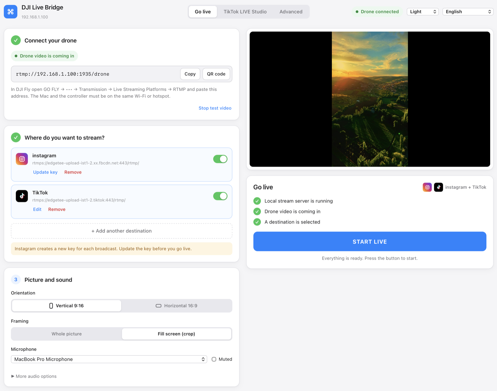
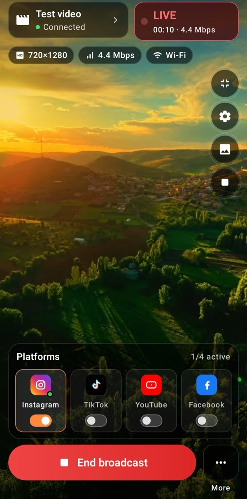
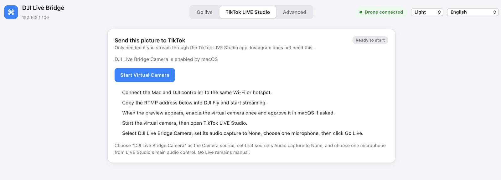
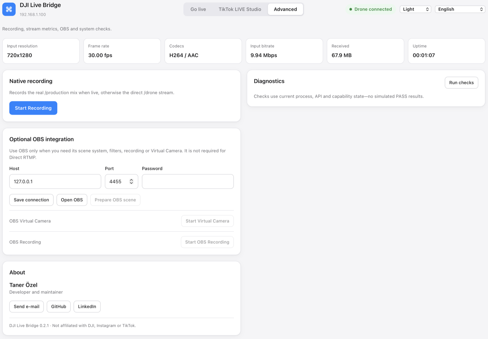

DJI ドローンの映像を Instagram、TikTok、YouTube、Facebook、カスタム RTMP 配信先へライブ配信
DJI Live Bridge は、パソコン上の DJI Fly から届く RTMP 配信を受け取り、複数のプラットフォームへ同時に送ります。TikTok LIVE Studio 用の仮想カメラにすることもでき、そちらではストリームキーが要りません。

画面はひとつ。ドローンを接続し、配信先を追加し、配信を開始を押すだけ。
できること
すべてが自分のパソコンの中で動きます。ドローンの映像が他人のサーバーを通ることはありません。
複数のプラットフォームへ同時に
同じ配信で Instagram、TikTok、任意のカスタム RTMP 配信先へ送れます。映像のエンコードは一度だけで、そこから各配信先へ転送するので、ひとつが失敗しても残りは止まりません。
動物を見つけて数える
AI Vision はドローン映像の中のヤギ、ヒツジ、ウシ、ウマ、ロバ、家禽を見つけ、配信映像上で1頭ずつラベル付きの枠で示し、数を数えます。処理はすべてお使いのコンピューター上で行われ、映像はアップロードされません。
TikTok にストリームキーは不要
内蔵の仮想カメラは TikTok LIVE Studio に「DJI Live Bridge Camera」として現れるため、RTMP の利用権限がなくても配信できます。
縦型動画のために
1080×1920、30 fps、6 Mbps CBR、H.264 High、キーフレーム 2 秒。余白は黒帯ではなく、映像をぼかした複製で埋めます。
ほかに入れるものはありません
FFmpeg はアプリに内蔵されています。Homebrew もターミナルも、別のダウンロードも要りません。macOS 版は Apple による署名と公証済みです。
キーはシステムの資格情報ストアに
ストリームキーはそれぞれ専用のキーチェーン項目に入り、設定ファイルやプロセスの引数、ログには一切現れません。
ライブプレビューと診断
低遅延のローカルプレビュー、メディアサーバーから取った実際の配信の数値、録画、そして結果を偽らないシステムチェック。
15 言語、5 テーマ
画面はシステムの言語に従い、アラビア語ではレイアウト全体が右から左に切り替わります。
Osmo カメラにも対応
Osmo Action、Osmo Pocket、Osmo 360 は、ドローンが DJI Fly から配信するのと同じように、DJI Mimo から RTMP でアプリに配信できます。
しくみ
DJI Fly がパソコンへ RTMP を送り、あとはパソコンが引き受けます。
- ドローンを接続DJI Fly で GO FLY → 伝送 → ライブ配信プラットフォーム → RTMP を開き、アプリに表示されたアドレスを貼り付けます。パソコンと送信機は同じ Wi-Fi かスマートフォンのテザリングにつなぎます。
- 配信先を選ぶInstagram、TikTok、任意の RTMP サーバーを、そのプラットフォームのサーバーアドレスとストリームキーで追加します。キーはシステムの資格情報ストアに保存されます。
- 配信を開始を押すローカルサーバーが動いていて、ドローンの映像が届いていて、配信先が選ばれていると、ボタンが押せるようになります。そのあとは経過時間、配信先ごとの状態、送信したデータ量が表示されます。
Android アプリでスマホから直接配信
現場にパソコンがない？ Stream My Drone は Android 版です。スマホが DJI Fly からの配信を受け取り、そのまま各プラットフォームへ送ります。
- 複数のプラットフォームへ同時配信：Instagram、TikTok、YouTube、Facebook、Twitch、Kick、任意のカスタム RTMP / RTMPS サーバー。
- 配信を始める前に、解像度・ビットレート・接続情報付きでドローン映像をライブプレビュー。
- 短いネットワーク切断のあとは配信先が自動で再接続し、別のアプリを使っている間も配信は続きます。
- 同じ Wi-Fi でも、スマホ自身のテザリングでも使えます。ストリームキーは Android Keystore で暗号化されます。
Google Play での買い切り、サブスクリプションなし。Android 9 以降。スマホは DJI Fly が送る映像をそのまま転送するため、仮想カメラと縦型 1080×1920 への変換はデスクトップ版の機能です。
Stream My DroneのiOS版もApp Storeで配信中です。

ストリームキーなしの TikTok
TikTok が RTMP のキーを出すのは一部のアカウントだけです。TikTok LIVE Studio には自分のアカウントでログインするのでその制限がなく、必要なのはカメラだけ。DJI Live Bridge がそのカメラになります。
- 仮想カメラを一度だけ有効にします。初回はシステムが許可を求めます。
- TikTok LIVE Studio でカメラのソースを追加し、DJI Live Bridge Camera を選びます。
- そのソースの音声取り込みを なし にして、LIVE Studio でマイクを 1 つ選びます。
- TikTok LIVE Studio で Go Live を押します。
このカメラが映像だけを運ぶのは意図的です。音声の扱いを TikTok 側に任せ、音が二重になるのを避けます。

細かいところ
録画、配信の数値、任意の OBS 連携、システムチェックは「詳細設定」タブにまとめてあり、主な流れの邪魔をしません。

インストール
- DMG をダウンロードApple Silicon の Mac（M1 以降）は
aarch64、Intel の Mac はx86_64のファイルを選び、DJI Live Bridge をアプリケーションフォルダにドラッグします。仮想カメラはそこからでないと動きません。Windows では-setup.exeのインストーラーを実行します。 - 開く準備はこれで終わりです。FFmpeg はアプリに同梱されているので、Homebrew もターミナルも、二つめのダウンロードもありません。
- 配信を開始macOS 版は Apple による署名と公証済みなので、警告なしで開きます。
アプリは 15 言語に対応しています
よくある質問
どのドローンで使えますか？
DJI Fly の「ライブ配信プラットフォーム」に RTMP が出てくる機体ならどれでも使えます。アプリが受け取るのは普通の RTMP 配信なので、ドローン自体と通信することはありません。RC 2 では、送信機にマイクがつながっていないと DJI Fly が配信の開始を拒むことがあります。
FFmpeg を自分で入れる必要はありますか？
ありません。アプリは GPL の部品を含まずにソースからビルドした FFmpeg（LGPL、H.264 は Apple VideoToolbox）を持っているので、入れるものも、更新し続けるものもありません。ライセンス本文と正確なビルドオプションはアプリ内の Contents/Resources/licenses にあります。
OBS は必要ですか？
いりません。OBS は任意で、シーンやフィルター、録画を使いたいときにだけ役立ちます。直接の RTMP 配信と仮想カメラは OBS なしで動きます。
Intel の Mac でも動きますか？
動きます。どのリリースにもダウンロードが二つあり、ひとつは Apple Silicon 用、もうひとつは Intel 用で、どちらも署名と公証済み、それぞれに FFmpeg が同梱されています。お使いの Mac に合うファイルを選んでください。
Windows でも動きますか？
はい。Windows 10/11 に対応しています。配信、プレビュー、録画、診断、内蔵の仮想カメラはすべてテスト済みです。インストーラーは TikTok LIVE Studio、OBS、Zoom 向けに「DJI Live Bridge Camera」デバイスを登録します。インストーラーにはコード署名がないため、Windows SmartScreen が警告を表示する場合があります。
動物を検出して数えられますか？
はい。配信タブで AI Vision をオンにすると、配信と仮想カメラの映像で動物ごとにラベル付きの枠が付き、カウンターが数を数えます。処理はすべてお使いのコンピューター上で行われます。ヤギ、ロバ、家禽の認識には Mac が必要です。Windows ではヒツジ、ウシ、ウマ、イヌ、ネコ、鳥、クマを認識します。
ストリームキーはどこに保存されますか？
システムの資格情報ストアに、配信先ごとに一件ずつ保存されます。配信を始めるときにループバック経由でローカルのメディアサーバーへ渡され、停止すると削除されます。設定ファイルやプロセスの引数、ログに現れることはありません。
なぜ Instagram は毎回新しいキーを求めるのですか？
それは Instagram 側の仕様で、配信のたびに新しいストリームキーを発行します。開始前に配信先のカードで「キーを更新」を使い、Instagram 側で「ライブを開始」を押すのも忘れないでください。押して初めて配信が公開されます。
映像が 720p なのはなぜですか？
DJI の送信機は RTMP で 720p を送ってくることがよくあります。アプリは実際の入力解像度を表示し、拡大した出力をネイティブの 1080p だと偽ることはしません。